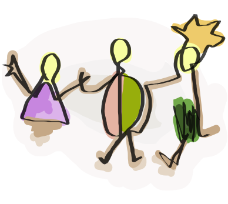

Math. This is where my love of challenge using logic and data come together. Studying mathematics gave me grit - the ability to be comfortable with not understanding completely, but still plunging forward. But I always gravitated towards something a bit more visually tangible…

Hello! I'm Ildikó
Hello! I'm Ildikó
(It's pronounced ILL-dee-co)
I’m an American-born Hungarian. My superpowers include pixel perfectionism, data wizardry, and a deep desire to do good in this world.
Projects
My Journey

Graphic Design & Programming. Back in the day, apps and interface design were in their infancy, left mainly for the programmer to implement. I thought it was too simple to design print brochures, so I got a job as a programmer...
My first job out in the wild was an Automation Software Engineer. As a newly minted adult, I wanted most of all to please my coworkers and managers. I did exactly what I was told: learn fast and program things due yesterday. In the process, I ignored certain thoughts which got louder and louder as time passed: Why do the users turn off our automation and do things manually, abandoning the software we wrote? Why is it not highly important to watch users try new releases to improve their experience and perception of the software?
When I finally voiced my concern to management, they shrugged, citing my proposed improvements a “waste of time” and “no competition, internal customers…it doesn’t matter...” Eventually, I found out that their vision was a lights-off factory with as little human intervention as possible.
I understood all the reasons, but it didn’t mean I was ok with it. I finally realized that this type of work was not for me, because what I enjoyed the most: talking to customers and ultimately design for them, was at risk of falling off the priority list entirely.
User Experience. My favorite apps are the ones I spend the least time with: they show me what I want to know, helps me make micro-decisions, and lets me move on with life. It’s like my favorite shoe that I forget about while “carrying” it around with me all day.
Every decision we make during the day saps our energy little by little. From the simple quest of “what I should wear today,” to figuring out “what’s for breakfast,” and then “what work email should I read first?” Many of these are micro-decisions, but they add up. I want to use research and design as a way to guide people along without friction. Ultimately, the final product should not waste energy on “how do I use this thing”, but instead enable humans to directly reach “what I want to achieve.”
I believe reducing anxiety and depression is my purpose as a designer. This doesn’t mean getting rid of technology, but being smarter in design to reduce unnecessary screen time thereby allowing for more community and human connection.